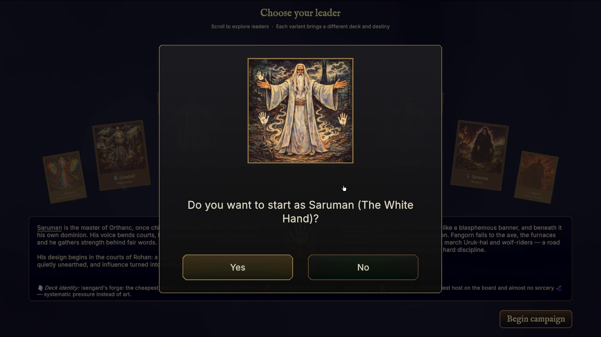
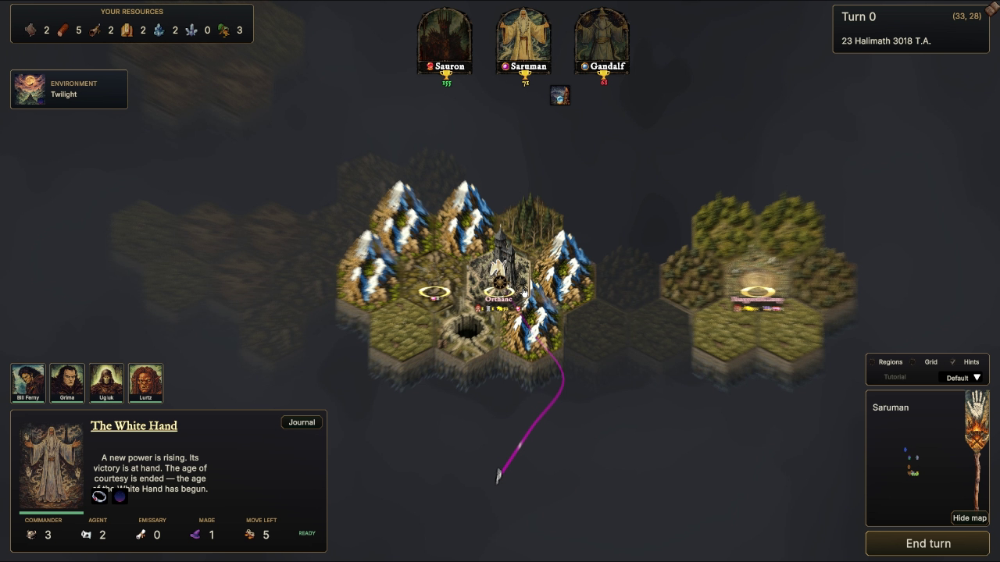
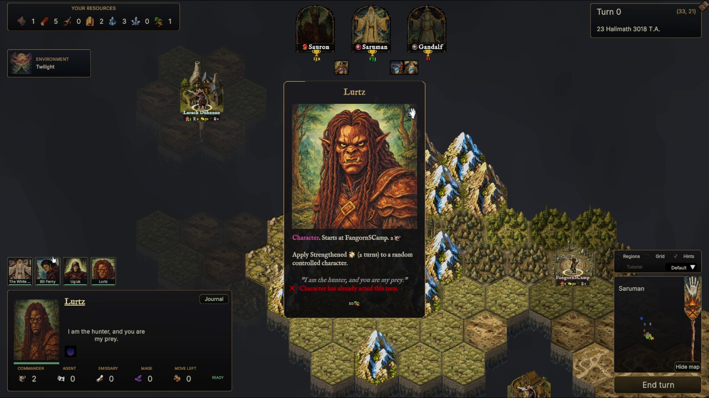
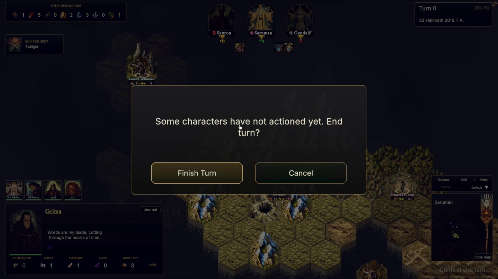
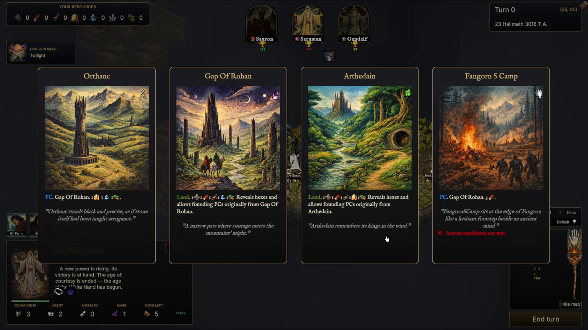
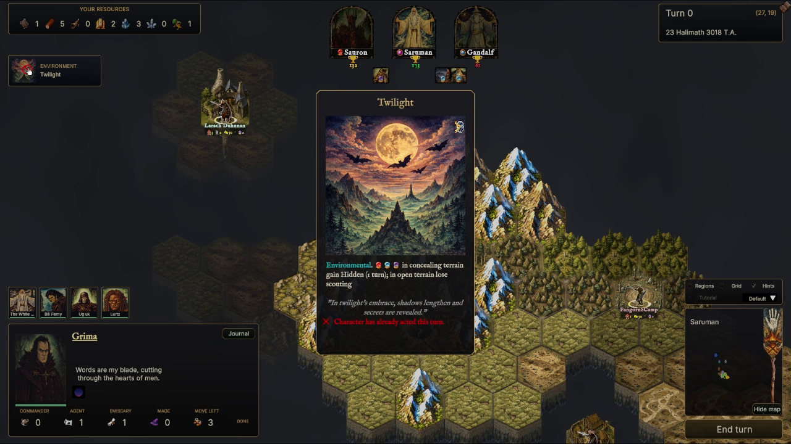
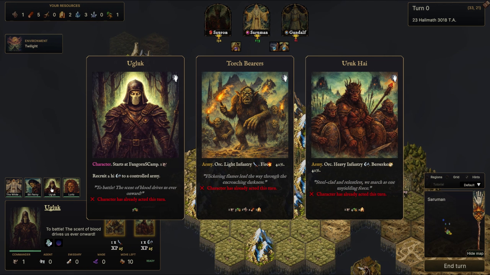
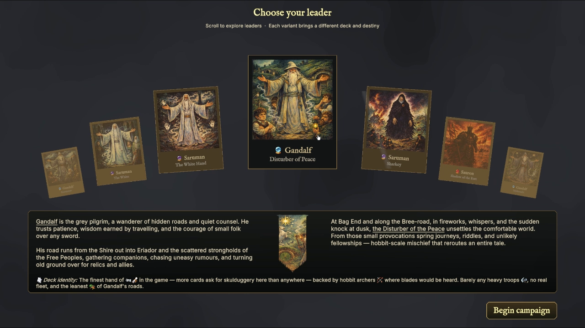

The Free Peoples
A hand-painted strategy & collective card game
Lead the Free Peoples, bend the world to the Shadow, or pursue the designs of the Neutral Nations in a sprawling war of cards, armies, and ancient power.
See it in motion
A war told your way
Runeboard brings a sweeping conflict to a living hex map. Muster distinct armies, guide legendary characters, claim strongholds, and play illustrated cards that can turn a desperate battle.
Every campaign grows from competing powers and shifting fronts. Roads, rivers, mountains, and hidden lands shape the choices before you—and the story left behind.
The Free Peoples

The Dark Lord

Neutral Nations
The Riddermark · 3018 T.A.
Command the war
Recruit troops, combine forces, and march commanders across a dangerous world.
Build a deck around your power and answer the battlefield with characters, actions, spells, and events.
Read the terrain, defend vital routes, and pursue objectives before the age turns against you.
Choose your leader
From the Start menu, choose a campaign — from the classic random earth of Champions of Middle Earth to the authored 2950 T.A. story of The Untold War of the Ring.
Move the mouse wheel over the carousel to cycle through the available leaders — Gandalf, Saruman, Sauron and their many flavours, each with its own deck identity.
Click the front card or the New Game button. Choose Yes to begin as that leader, or No to return to the selection screen.

"Do you want to start as Saruman (The White Hand)?"

Turn 0 · Isengard, 23 Halimath 3018 T.A.
Turn 0
Your capital, characters, and starting resources are laid out on the hex map — fog of war hides the rest of Middle-earth until you explore it.
Every reveal, encounter, and rival move streams into the log at the bottom of the screen, so you always know what changed and why.
Click glowing markers to trigger encounters, and resolve event cards — illustrated moments like Secrets From A Lost Tome — as they arise.

Hover a name, meet the card behind it
Know your company
Hovering a character's name — like Lurtz — reveals their full card: stats, portrait, and ability text.
Underlined army names such as the Uruk Hai open that unit's own card, with its own stats and flavor text.
A small icon beneath the Resources bar previews the current Environmental card in play, like Twilight.
Manage the realm
Click a Resources icon to see what it costs to Build and Sell — caravan prices shift turn to turn.
A red badge on a leader's banner marks a waiting event; click it to react and clear the alert.
When you're done, the disc in the bottom-right corner asks "End turn?" — confirm to advance the calendar.

"End turn?" — Finish Turn or Cancel
“The board remembers every march, every broken oath, every last stand.”
— From the annals of the campaign
Orthanc, the Gap of Rohan, Arthedain, Fangorn's Camp
Into harm's way
Arrow keys and W A S D send a selected character across the map — the game's own Movement tutorial shows exactly which key goes which way.
Spotted enemies are traced in red, spotted neutrals in grey — a hex bordered in red is one you enter at your own risk.
Every settlement and region carries its own card — Orthanc, the Gap of Rohan, Arthedain, Fangorn's Camp — each with the resources and standing it brings to your realm.
The world is (artificially) intelligent
All the nations have score calculation utilities that measure danger, opportunities, growth, stagnation.
Store the situation of the world, register and remember nation and character missions
Plans tasks for Characters, dividing them into specific possible behaviours
Execute the behaviours depending on the Utility AI scores and feasibility
A Multilayer Perceptron (MLP) trained on supervised best strategies, used also to consult best strategies

Watch Mode · the campaign plays itself


From the campaign
Hand-painted terrain, character portraits, illustrated cards, and atmospheric interfaces give each campaign the texture of a lost fantasy game brought back to life.







[Retro] Three dwarven explorers walk over the Green Hills...
Into harm's way
from old RPG books I had at home
some of them to have a unique retro old feeling.
Using old color schemas and techniques from the 80s.
on an open source, open weight Qwen Image model.
trained on my own art to create cards for the game.


The road goes ever on
Explore the project, watch the campaign grow, and follow development on GitHub.
Visit the repository